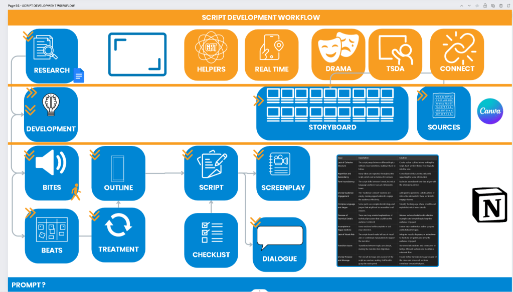

Script development workflow

The Ultimate Guide to Script Development Workflow
Introduction
Creating a script is an intricate process that involves multiple stages, each contributing to the final masterpiece. Understanding the script development workflow is crucial for writers, filmmakers, and anyone involved in the storytelling process. This guide will walk you through each step of the workflow, ensuring you have a clear roadmap from initial research to the final screenplay.
Step 1: Research
Research is the foundation of any script. This stage involves gathering information, understanding the context, and ensuring the story is grounded in reality. Effective research can make your story more authentic and engaging. > 100 pages of Google Doc Capture
Step 2: Development
In the development phase, you start shaping your story. This involves brainstorming ideas, identifying key themes, and outlining the plot. Development is where your story starts to take form, setting the stage for detailed planning.
Step 3: Beats
Beats are the small units of story that build up to the larger narrative. Identifying beats helps in structuring the story, ensuring a logical flow and pacing. This step is crucial for maintaining the audience's interest throughout the script.
Step 4: Treatment
A treatment is a detailed summary of your story, often written in prose form. It includes the main plot points, character arcs, and significant scenes. The treatment serves as a blueprint for your script, guiding you through the writing process.
Step 5: Bites
"Bites" are the significant pieces of dialogue, actions, or scenes that stand out in your story. Identifying these helps in highlighting the key moments and ensuring they receive the attention they deserve in the script.
Step 6: Outline
Creating an outline involves organizing your beats and bites into a coherent structure. This step ensures that the story flows logically and that all the necessary components are in place before you start writing the full script.
Step 7: Script
With a solid outline, you can start writing the script. This involves fleshing out the scenes, writing dialogue, and ensuring that the story is engaging and well-paced. The script is the detailed version of your story, ready for production.
Step 8: Screenplay
The screenplay is a refined version of the script, formatted according to industry standards. It includes detailed instructions for actors, directors, and production crew, ensuring everyone involved in the production understands the story and their roles.
Step 9: Checklist
Before finalizing your script, it's essential to go through a checklist. This includes checking for plot holes, ensuring consistent character development, and verifying that all elements of the story are in place.
Step 10: Dialogue
Dialogue is a critical component of your script. It must be natural, engaging, and true to the characters. Revising dialogue ensures that it contributes to the story and resonates with the audience.
Additional Elements:
- Storyboard: Visualizing your script through storyboards can help in understanding the flow of scenes and identifying any potential issues with pacing or continuity.
- Sources: Using reliable sources, including tools like Canva, can help in creating visual elements and other resources needed for your script.
- Helpers, Real-Time Feedback, Drama, TSDA, and Connect: Leveraging various tools and resources can enhance your script development process. This includes using AI tools for generating ideas, receiving real-time feedback, and connecting with other creators for collaboration.
Conclusion
Script development is a multifaceted process that requires careful planning and execution. By following this workflow, you can ensure that your story is well-structured, engaging, and ready for production. Happy writing!
Feel free to customize this draft further based on your specific needs and preferences.
Imported from rifaterdemsahin.com · 2024